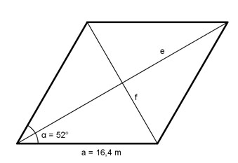

Aufgabe 73 Ein Grundstück hat die Form einer Raute, mit einer Seitenlänge a = 16,4 m und einem Winkel α = 52°. Wie groß sind die beiden Diagonalen e und f?

Im Dreieck ABC: e/2 cos 52/2° = --------- |*16,4 m 16,4 m e/2 = cos 52/2° * 16,4 m |*2 e = 2 * 16,4 m * 0,8988 = 29,5 m f/2 sin 52/2° = -------- |*16,4 m 16,4 m f/2 = cos 52/2° * 16,4 m |*2 f = 2 * 16,4 m * 0,4384 = 14,4 m